4 Credit Card Fraud Detection
Every credit card transaction generates a simple decision: approve it or block it. Most of the time the answer is obvious. The difficulty lies in the small fraction of transactions that appear legitimate but are actually fraudulent. In large payment systems, these events are rare, costly, and constantly changing, creating a learning problem that differs substantially from many conventional classification tasks.
This project uses a publicly available European credit card transaction dataset containing highly anonymized transaction records. The analysis combines unsupervised learning techniques to explore the structure of fraudulent activity with a supervised benchmarking framework designed to evaluate the predictive performance of several classification algorithms.
4.1 Problem Definition
The central difficulty in credit card fraud detection is severe class imbalance. Fraudulent transactions represent only a tiny fraction of overall activity, meaning that a model can achieve high accuracy while failing to identify most fraud cases [1].
This imbalance creates an unavoidable trade-off. Missing a fraudulent transaction may result in direct financial losses, while incorrectly flagging a legitimate transaction may interrupt a customer purchase and generate unnecessary friction. Effective fraud detection therefore requires more than maximizing a single performance metric. The objective is to identify as many fraudulent transactions as possible while maintaining an acceptable level of false alarms [2] [3].
Most machine learning studies approach this problem through supervised classification, using historical examples of fraudulent and legitimate transactions to train predictive models. This approach has produced substantial improvements over traditional rule-based systems and remains the foundation of modern fraud analytics [4] [5].
A less explored question is whether fraudulent transactions exhibit recognizable structures before any classification model is trained. If fraud is not a single behavior but a collection of different behaviors, clustering techniques may reveal groups of transactions that share common characteristics. Such patterns could provide additional insight into how fraudulent activity is organized within the feature space and help explain why certain classification models perform better than others [6].
The project therefore investigates the problem from two complementary perspectives. First, clustering methods are used to explore whether fraudulent transactions form identifiable groups within the feature space. Second, a supervised benchmarking study compares several machine learning algorithms under a common evaluation framework. The objective is not only to determine which models achieve the strongest predictive performance, but also to better understand the structure of fraudulent behavior in a highly imbalanced transaction dataset.
4.2 Modeling Approach
The analysis combines unsupervised and supervised learning techniques to examine credit card fraud from two complementary perspectives. The first investigates whether fraudulent transactions exhibit identifiable structure within the feature space. The second evaluates the extent to which that structure can be exploited for predictive purposes.
The unsupervised stage applies clustering algorithms to the transaction data in order to explore the distribution of fraudulent and legitimate transactions. K-Means, Agglomerative Clustering, and DBSCAN are used because they represent different notions of similarity and cluster formation. K-Means partitions observations around centroids, Agglomerative Clustering builds nested groups through successive merges, and DBSCAN identifies groups based on local density while explicitly accounting for noise points. Together, these methods allow the analysis to examine whether fraudulent transactions form concentrated groups, distinct fraud profiles, or isolated anomalies.
The supervised stage is formulated as a benchmarking study. Rather than focusing on a single predictive model, the project compares a diverse set of classification algorithms representing different modeling philosophies. The benchmark includes Logistic Regression, Naive Bayes, Linear and Quadratic Discriminant Analysis, K-Nearest Neighbors, Linear Support Vector Machines, Decision Trees, Random Forests, and XGBoost. To examine the impact of class imbalance, the models are evaluated under three training strategies: the original transaction distribution, random undersampling, and the Synthetic Minority Oversampling Technique (SMOTE).
Because fraudulent transactions represent only a small fraction of the observations, model evaluation focuses on metrics that remain informative under severe class imbalance. Particular attention is given to precision, recall, F1-score, ROC-AUC, Precision-Recall AUC, and the Kolmogorov-Smirnov statistic. Stratified cross-validation is used throughout the benchmark to ensure consistent comparisons across models.
The underlying assumption of the project is that fraudulent transactions leave detectable signatures in the available features. If such signatures exist, clustering methods should reveal some degree of structure within the transaction space, while supervised learning algorithms should be able to exploit that structure for predictive purposes. Examining both perspectives provides a more complete view of fraud behavior than either approach in isolation.
4.3 Methodology and Implementation
The analysis begins with an unsupervised exploration of the feature space to determine whether fraudulent transactions exhibit identifiable structure without using the target labels. Clustering algorithms are used to examine the distribution of transactions and to assess whether fraud tends to concentrate in specific regions of the data.
The second stage introduces the transaction labels and evaluates a range of supervised learning algorithms within a common benchmarking framework. Together, these two perspectives provide a broader understanding of the problem, combining exploratory analysis with predictive modeling.
4.3.1 Unsupervised Learning Methodology
The unsupervised learning stage investigates whether fraudulent transactions exhibit identifiable structure in the feature space without using the target labels during model construction. If fraudulent transactions tend to concentrate in specific regions of the transformed feature space, clustering algorithms should be able to reveal these patterns.
The analysis begins with an exploratory examination of the dataset. Particular attention is given to the severe class imbalance that characterizes the fraud detection problem.
The class distribution is summarized below.
| Class | Transactions | Percentage (%) |
|---|---|---|
| Legitimate | 284,315 | 99.827 |
| Fraudulent | 492 | 0.173 |
Figure fig-class-distribution illustrates the extreme imbalance between legitimate and fraudulent transactions. Fraudulent transactions represent less than one percent of all observations, making fraud detection a highly imbalanced classification problem.
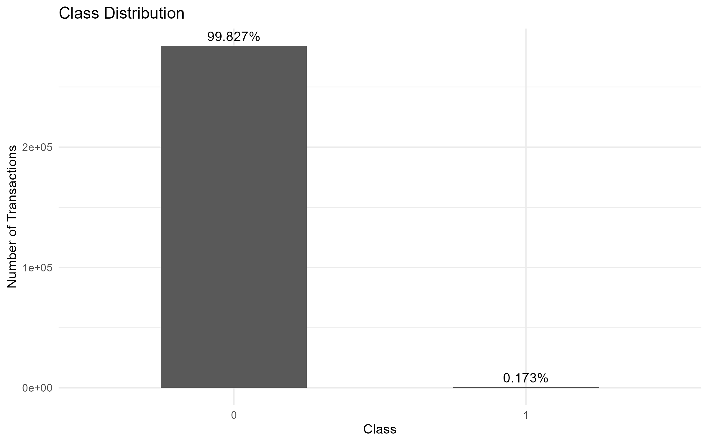
Transaction amounts were also examined to characterize the range and concentration of transaction values.
| Statistic | Value |
|---|---|
| Minimum | 0.00 |
| 1st Quartile | 5.60 |
| Median | 22.00 |
| Mean | 88.35 |
| 3rd Quartile | 77.17 |
| Maximum | 25,691.16 |
The distribution of transaction amounts is highly right-skewed, with most transactions concentrated at relatively small values and a small number of extreme observations. This behavior can be observed in Figure fig-transaction-amount-distribution.
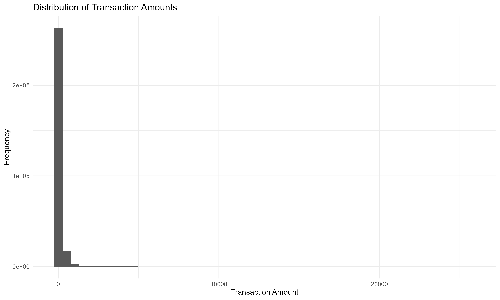
Transaction amounts were further compared across classes. Although fraudulent and legitimate transactions overlap substantially, Figure fig-transaction-amount-by-class suggests differences in the distribution of transaction values between the two groups.
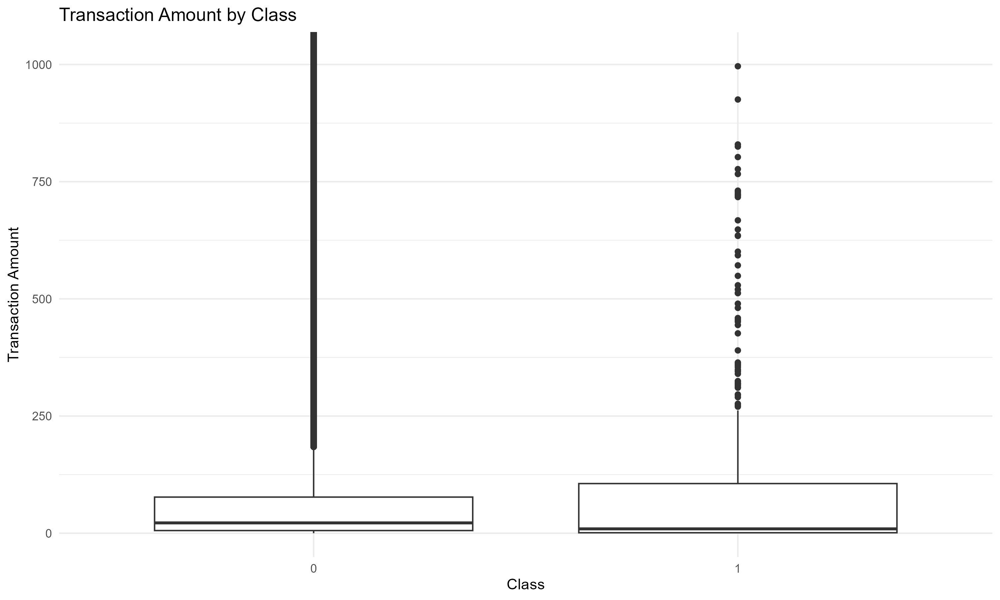
The variables V1–V28 correspond to principal components obtained through a prior anonymization process. Selected features were visualized to examine differences between fraudulent and legitimate transactions. Several variables exhibit noticeable shifts between classes, suggesting that fraudulent transactions occupy distinct regions of the transformed feature space.
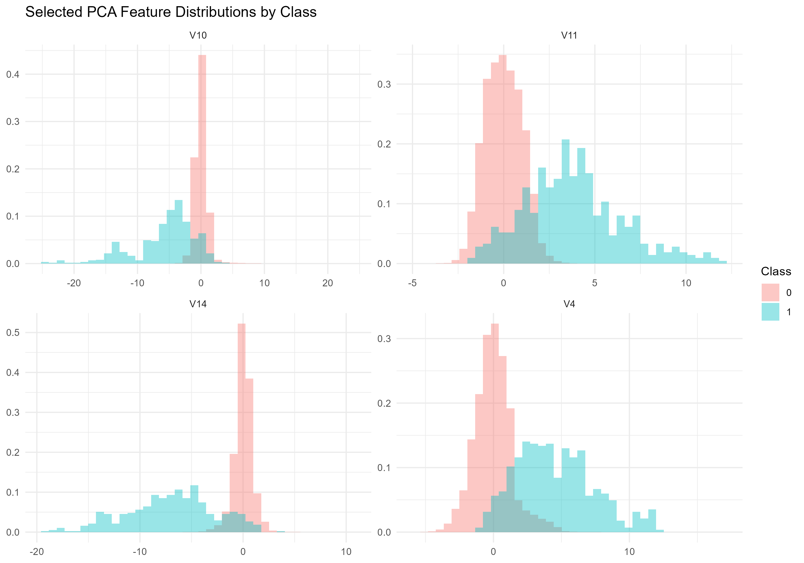
To complement the univariate analysis, a correlation matrix was computed using all available variables.
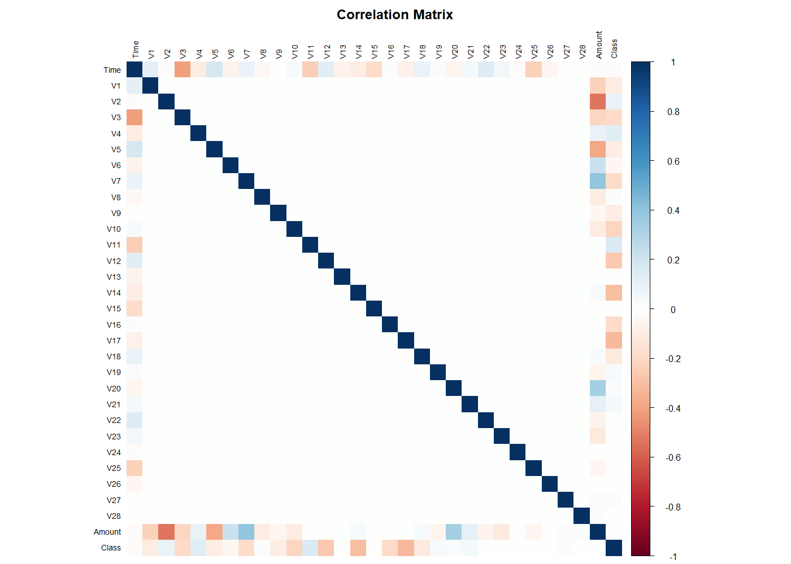
Following the exploratory analysis, the target variable was separated from the predictors and the Time variable was removed. The data was then partitioned into training and test sets using stratified sampling to preserve the original class distribution. Feature scaling was applied after the train-test split, with scaling parameters estimated exclusively from the training data.
Because the training set contains more than two hundred thousand observations, a stratified sample was extracted from the training data for the clustering analysis. The sample preserves the original fraud rate while reducing computational requirements and allowing a consistent comparison across clustering algorithms.
Three clustering approaches were evaluated:
- K-Means Clustering
- Agglomerative Clustering
- DBSCAN
For K-Means, multiple values of (k) were explored. The elbow method was evaluated using the within-cluster sum of squares (inertia).
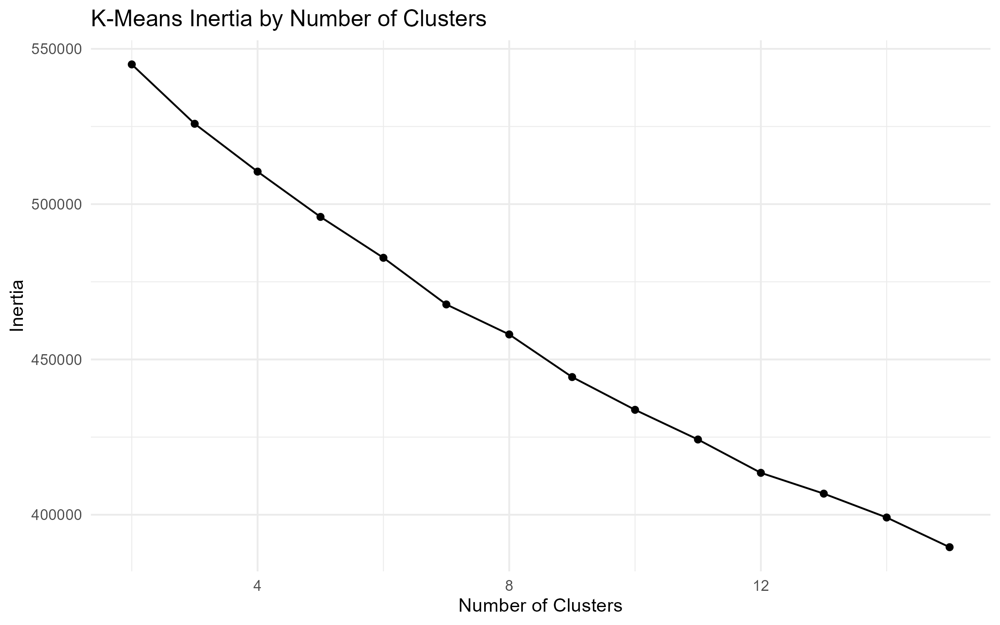
The elbow plot does not reveal a clear point at which additional clusters provide diminishing returns. As a result, the number of clusters cannot be determined reliably using inertia alone. Additional validation metrics were evaluated and used as complementary diagnostic tools. Since no single criterion produced a definitive solution, the final choice was guided by interpretability and fraud concentration within the resulting clusters.
A three-cluster solution was retained because it revealed the strongest concentration of fraudulent transactions while remaining straightforward to interpret.
The composition of the resulting clusters was then examined by comparing cluster-level fraud rates against the baseline fraud rate observed in the clustering sample.
| Method | Key Finding |
|---|---|
| K-Means | One cluster exhibited a fraud rate approximately 21 times higher than the baseline fraud rate. |
| Agglomerative Clustering | A small cluster exhibited a fraud rate approximately 490 times higher than the baseline fraud rate. |
| DBSCAN | Fraudulent transactions were primarily identified as noise points rather than members of dense clusters. |
The clustering results provide complementary perspectives on the structure of fraudulent transactions. K-Means identified a relatively large region characterized by elevated fraud concentration, while Agglomerative Clustering isolated a much smaller cluster with an exceptionally high fraud rate. In contrast, DBSCAN classified fraudulent transactions primarily as noise, suggesting that some fraud patterns behave as isolated anomalies rather than members of dense groups.
Taken together, these results indicate that fraudulent transactions are not uniformly distributed across the feature space. Although the exact structure varies across clustering algorithms, all three methods reveal behavior that differs substantially from the baseline distribution of legitimate transactions.
These findings provide preliminary evidence that fraudulent transactions leave detectable signatures in the available feature space and motivate the supervised learning stage of the analysis.
Additional implementation details are available in the companion Quarto notebook here. A companion Python implementation is also available here.
4.3.2 Supervised Learning Benchmark
The supervised stage uses the transaction labels to evaluate how well different classification models can identify fraudulent transactions. The purpose is not to find a model that looks good under a single metric, but to compare modelling choices under conditions that resemble the operational reality of fraud detection: the positive class is rare, the cost of missed fraud is not the same as the cost of a false alarm, and a model that performs well on average may still be unhelpful if it fails to rank suspicious transactions near the top.
The benchmark was implemented in two complementary forms. The Python notebook runs the full comparison across the complete set of candidate algorithms and class imbalance strategies. The R / Quarto notebook focuses on the two retained configurations that are most useful for the final discussion: a Random Forest trained on the original class distribution, and an XGBoost model trained after applying SMOTE. This split keeps the implementation practical while preserving the main modelling comparison.
The training and test sets were created using stratified sampling so that the rare fraud class remained represented in both subsets. Scaling was estimated from the training data only and then applied to the test data, avoiding leakage from unseen transactions into the model preparation step. This is especially important in fraud detection, where small forms of leakage can make a model appear much stronger than it would be in deployment.
The original training distribution is shown in Table tbl-class-distribution-training-strategies. The table also shows the SMOTE-resampled version used by the XGBoost model. The resampled dataset is balanced for training purposes only; the test set remains in the original imbalanced distribution.
| Strategy | Class | Transactions | Percentage (%) |
|---|---|---|---|
| Original | Legitimate | 227,446 | 99.825 |
| Original | Fraudulent | 399 | 0.175 |
| SMOTE | Legitimate | 227,446 | 50.000 |
| SMOTE | Fraudulent | 227,446 | 50.000 |
Three imbalance strategies were considered in the broader supervised benchmark: the original class distribution, random undersampling, and SMOTE. The original distribution preserves the natural frequency of fraud, which is useful because it reflects the problem as it is encountered in practice. Random undersampling creates a balanced training set by removing legitimate transactions, which may help some models learn the minority class but also discards a large amount of information. SMOTE creates synthetic minority-class observations, allowing the model to see a denser representation of the fraud region without removing legitimate transactions.
The evaluation framework uses precision, recall, F1-score, ROC-AUC, Precision-Recall AUC, and the Kolmogorov-Smirnov statistic. In this setting, accuracy is deliberately avoided as a headline metric. With fraud representing only \(0.173\%\) of transactions, a classifier could obtain high accuracy by predicting almost everything as legitimate.
Precision measures how many flagged transactions are actually fraudulent:
\[ \text{Precision} = \frac{TP}{TP + FP} \tag{4.1}\]
Recall measures how many fraudulent transactions are successfully identified:
\[ \text{Recall} = \frac{TP}{TP + FN} \tag{4.2}\]
The F1-score combines both quantities into a single summary:
\[ F_1 = 2 \cdot \frac{\text{Precision} \cdot \text{Recall}}{\text{Precision} + \text{Recall}} \tag{4.3}\]
For model selection, Precision-Recall AUC is particularly important because it focuses on the minority class. ROC-AUC remains useful, but under severe imbalance it can sometimes look reassuring even when the model generates too many false positives for practical use. The KS statistic adds a further diagnostic view by measuring the maximum separation between the empirical score distributions of legitimate and fraudulent transactions.
The broader Python benchmark selected one leading model from each imbalance strategy. Random Forest performed best under the original class distribution, while XGBoost was the strongest model under both undersampling and SMOTE. The final test-set inspection then focused on whether those benchmark findings translated to unseen transactions.
In the final R / Quarto implementation, the comparison was narrowed to the two most informative retained configurations. Random Forest trained on the original class distribution represents the best-performing model that does not alter the training distribution. XGBoost with SMOTE represents the strongest imbalance-aware alternative. The undersampling-based XGBoost model was not retained for the final comparison because, despite strong cross-validation results on the balanced training data, its test-set behaviour produced too many false positives to be attractive as a practical fraud-screening model.
The final comparison is summarized in Table tbl-final-model-comparison.
| Strategy | Model | Precision | Recall | F1-score | ROC-AUC | PR-AUC | KS statistic |
|---|---|---|---|---|---|---|---|
| Original | Random Forest | 0.9625 | 0.8280 | 0.8902 | 0.9656 | 0.8782 | 0.9056 |
| SMOTE | XGBoost | 0.7080 | 0.8602 | 0.7767 | 0.9823 | 0.8594 | 0.9040 |
The two models make a useful trade-off visible. Random Forest is more conservative. It achieves higher precision, a higher F1-score, and the strongest Precision-Recall AUC. In practical terms, when it flags a transaction as fraudulent, it is more likely to be correct. This matters because false alarms are not free: they can block legitimate purchases, inconvenience customers, and create manual review work.
XGBoost with SMOTE is more aggressive. It achieves higher recall and a higher ROC-AUC, meaning it captures a larger share of the fraudulent transactions and ranks the two classes well across thresholds. The cost is lower precision: more legitimate transactions are pulled into the fraud queue. Depending on the operational context, this may still be acceptable. A bank or payment provider with a low-friction review process may prefer higher recall, while a retailer or platform with a strong customer-experience focus may place greater weight on precision.
Figure fig-final-model-comparison-pr-auc compares the retained models using Precision-Recall AUC. The difference is not large, but Random Forest remains slightly ahead on the metric that is most directly aligned with rare-event detection.
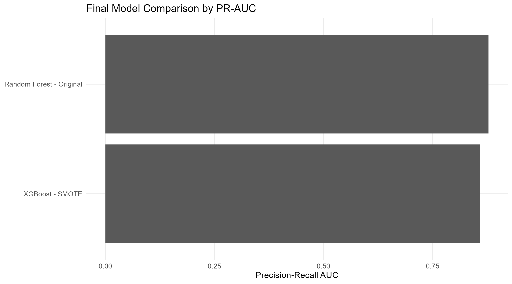
The confusion matrices in Figure fig-confusion-matrices show the same trade-off from an operational perspective. Random Forest produces fewer false positives, while XGBoost with SMOTE detects slightly more fraudulent cases at the default threshold. This is the kind of result where the “best” model depends less on the leaderboard and more on the business rule attached to the score.
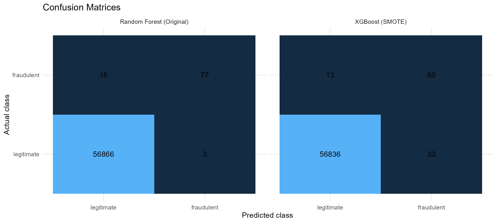
The ROC curves in Figure fig-roc-curves show that both models have strong ranking ability across classification thresholds. XGBoost with SMOTE has the higher ROC-AUC, which is consistent with its stronger recall. However, ROC curves should be read carefully in this problem because the number of legitimate transactions is so large that a small false positive rate can still translate into many legitimate transactions being flagged.
The Precision-Recall curves in Figure fig-precision-recall-curves provide a more direct view of rare-class performance. They show how precision changes as recall increases, which is often closer to the decision that a fraud team needs to make: how many alerts can be reviewed, and how many missed frauds are acceptable?
The KS statistic provides another way to assess whether the model scores separate legitimate and fraudulent transactions. The values in Table tbl-kolmogorov-smirnov-statistic are almost identical for the two retained models.
| Model strategy | KS statistic |
|---|---|
| Random Forest - Original | 0.9056 |
| XGBoost - SMOTE | 0.9040 |
The diagnostic plot in Figure fig-kolmogorov-smirnov-diagnostic-plot shows the empirical cumulative distributions of the predicted fraud probabilities for the two classes. A wider separation between the curves indicates stronger discrimination. The near-identical KS values suggest that both models assign noticeably different score distributions to legitimate and fraudulent transactions, even though their default-threshold behaviour differs.
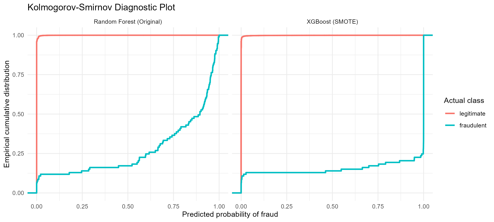
From a modelling point of view, the main conclusion is that tree-based ensemble methods are well suited to this dataset. They can capture nonlinear relationships among the anonymized PCA features without requiring a large amount of manual feature engineering. The original Random Forest is a strong and stable option, while SMOTE makes XGBoost more sensitive to fraudulent transactions. The stronger choice depends on the preferred operating point. For a portfolio project aimed at a practical analytics audience, this is an important distinction: the model is not simply selected because it has the largest headline score, but because its error profile fits the decision context.
Additional implementation details are available in the companion Quarto notebook here. A companion Python implementation is also available here.
4.4 Results, Discussion, and Limitations
The benchmark highlights two consistent findings. First, tree-based ensemble methods provided the most reliable discrimination between legitimate and fraudulent transactions. Second, explicitly addressing the class imbalance produced substantial improvements across almost every classifier.
Random Forest and XGBoost achieved the strongest overall performance because both algorithms are well suited to heterogeneous tabular data containing complex, nonlinear relationships. Rather than relying on a single global decision boundary, they partition the predictor space into many local decision rules, allowing subtle interactions among the anonymized variables to be captured. This flexibility is particularly valuable in fraud detection, where fraudulent transactions rarely follow a single, easily separable pattern.
The severe class imbalance proved to be the central modelling challenge. With fraudulent transactions representing less than 0.2% of the observations, models trained on the original data naturally favored the majority class. Under these conditions, high overall accuracy can be achieved while missing a substantial fraction of fraudulent operations, making accuracy a poor indicator of practical performance.
Applying resampling strategies before training shifted the learning process toward the minority class. Random oversampling increased the exposure of fraudulent examples, while SMOTE generated additional synthetic observations that expanded the minority decision region instead of simply duplicating existing cases. Although the magnitude of the improvement varied across algorithms, the overall effect was consistent: recall increased markedly, while precision typically declined because more legitimate transactions were classified as suspicious.
This trade-off between precision and recall is unavoidable in operational fraud detection. A model optimized for precision reduces the number of false alarms but may fail to detect fraudulent transactions. A model optimized for recall identifies a larger proportion of fraud at the expense of investigating more legitimate payments. The preferred operating point ultimately depends on business costs, including the financial impact of missed fraud, investigation capacity, customer experience, and regulatory considerations.
For this reason, the Precision-Recall AUC provides a more informative summary than the traditional ROC AUC. When the positive class is extremely rare, ROC curves may appear optimistic because the false positive rate changes only slightly even after many legitimate transactions are incorrectly flagged. Precision-Recall curves focus exclusively on the minority class by evaluating how many detected alerts are actually fraudulent and how many fraudulent transactions are successfully recovered. As a result, they offer a more realistic assessment of model quality under extreme class imbalance.
Several limitations should be considered when interpreting these results. The predictors available in the public dataset were anonymized through Principal Component Analysis before release, preventing any interpretation of which original transaction characteristics contributed most to the predictions. The analysis also relies on a single historical collection of European card transactions observed over a limited time window. Fraud patterns evolve continuously as attackers adapt to existing detection systems, meaning that a model calibrated on historical behaviour may gradually lose predictive power through concept drift. In practice, production systems require continuous monitoring, periodic recalibration of decision thresholds, and regular retraining as new labelled transactions become available. Consequently, the benchmark should be viewed as a comparison of modelling strategies under controlled conditions rather than as a final fraud detection system ready for deployment.
4.5 Technical Appendix
This appendix summarizes the methodological concepts required to understand the modelling decisions presented in the benchmark. The objective is to provide enough theoretical background to interpret the results without developing the algorithms in full mathematical detail.
4.5.1 Random Forest
Random Forest is an ensemble learning algorithm that combines the predictions of many decision trees. Rather than relying on a single tree, the model aggregates a collection of independently constructed trees, producing predictions that are typically more stable and less sensitive to random fluctuations in the training data.
4.5.1.1 Decision Trees
A decision tree partitions the predictor space into a sequence of increasingly homogeneous regions. Starting from the root node, the algorithm repeatedly selects the feature and split point that best separate the observations according to a chosen impurity criterion. The final leaves contain observations with similar characteristics, and each leaf is assigned a class probability based on the proportion of fraudulent transactions it contains.
For a binary classification problem, the estimated probability of fraud at a terminal node is simply
\[ \hat{p}=\frac{\text{Number of fraudulent observations}}{\text{Total observations in the node}}. \tag{4.4}\]
Although decision trees are easy to interpret and naturally capture nonlinear relationships and feature interactions, a single tree is usually unstable. Small changes in the training data may produce substantially different tree structures.
4.5.1.2 Ensemble Prediction
Random Forest addresses this instability by combining many trees built from slightly different versions of the training data while also considering random subsets of predictors at each split. The final prediction is obtained through majority voting,
\[ \hat{y}=\operatorname*{mode}\left(\hat{y}_1,\hat{y}_2,\ldots,\hat{y}_B\right), \tag{4.5}\]
where \(\hat{y}_b\) denotes the prediction of the \(b\)-th tree.
Class probabilities are estimated by averaging the probabilities produced by the individual trees,
\[ \hat{P}(y=1\mid x)=\frac{1}{B}\sum_{b=1}^{B}\hat{P}_b(y=1\mid x). \tag{4.6}\]
Because prediction is based on many independent trees rather than a single model, Random Forest generally achieves lower variance and better generalization. These characteristics explain why it consistently performs well on structured tabular datasets such as credit card transaction records. Its main limitations are reduced interpretability compared with a single decision tree and larger computational requirements as the number of trees increases.
4.5.2 XGBoost
XGBoost is an optimized implementation of Gradient Boosting in which trees are added sequentially instead of independently. Each new tree is trained to reduce the prediction errors made by the ensemble constructed so far, allowing the model to progressively refine its representation of complex decision boundaries.
If the prediction after \(t-1\) trees is \(\hat{y}^{(t-1)}\), the next tree contributes a correction,
\[ \hat{y}^{(t)}=\hat{y}^{(t-1)}+f_t(x), \tag{4.7}\]
where \(f_t\) represents the new decision tree.
Rather than minimizing only the training loss, XGBoost optimizes a regularized objective function,
\[ \mathcal{L}=\sum_{i=1}^{n}l(y_i,\hat{y}_i)+\sum_{t}\Omega(f_t), \tag{4.8}\]
where \(l(\cdot)\) measures the prediction error and \(\Omega(\cdot)\) penalizes overly complex trees.
The regularization term discourages unnecessarily deep or highly specialized trees, reducing the risk of overfitting while preserving predictive accuracy. Together with efficient optimization procedures and effective handling of nonlinear feature interactions, this design explains why XGBoost frequently ranks among the strongest performers on structured tabular datasets.
4.5.3 Handling Class Imbalance
Fraud detection datasets are naturally imbalanced because fraudulent transactions represent only a very small fraction of all operations. Standard classification algorithms are designed to minimize overall prediction error, so they tend to prioritize the majority class unless corrective measures are introduced during training.
One widely used approach is the Synthetic Minority Over-sampling Technique (SMOTE). Instead of duplicating existing minority observations, SMOTE generates new synthetic examples by interpolating between neighboring fraudulent transactions in the feature space.
For each minority observation, the algorithm selects one of its nearest minority neighbours and creates a synthetic sample along the line joining the two observations,
\[ x_{\mathrm{new}}=x_i+\lambda(x_j-x_i), \tag{4.9}\]
where \(x_i\) is an existing minority observation, \(x_j\) is one of its nearest minority neighbours, and \(\lambda\in[0,1]\) is a random interpolation factor.
By populating the minority region with plausible synthetic observations, SMOTE encourages the classifier to learn broader decision boundaries instead of focusing on a handful of isolated fraud cases. This generally improves the ability to recover fraudulent transactions while avoiding the excessive duplication that can occur with simple random oversampling.
Several extensions combine synthetic oversampling with subsequent cleaning procedures that remove ambiguous or overlapping observations near the class boundary. Although such hybrid methods can further improve performance in some applications, the benchmark presented in this chapter focuses on the standard resampling strategies needed to evaluate the effect of class imbalance on the candidate classifiers.